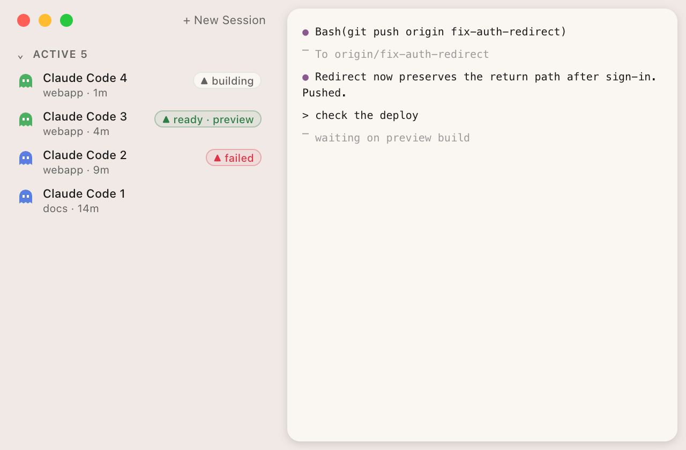
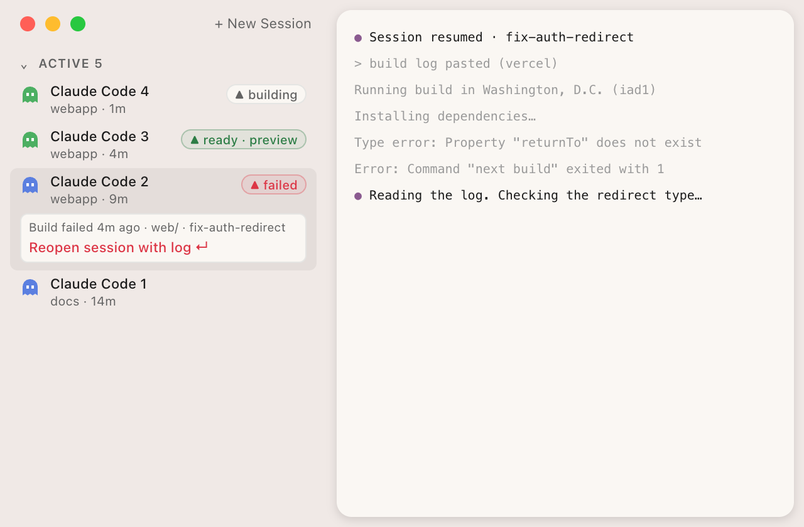
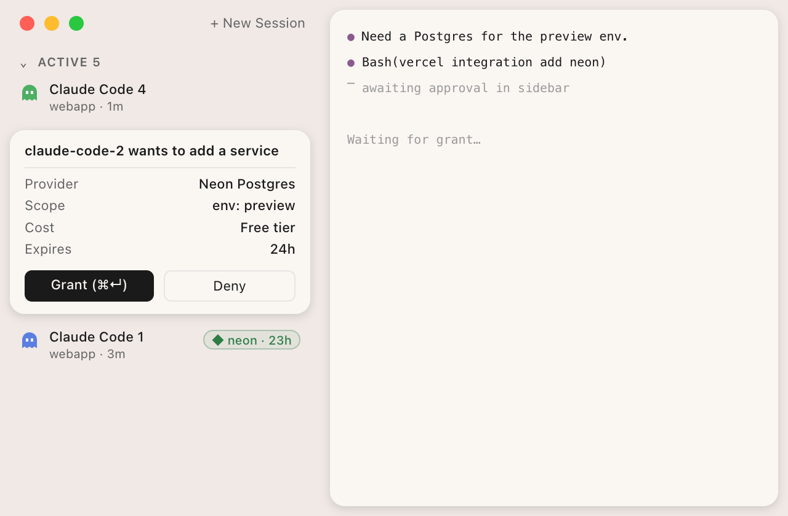
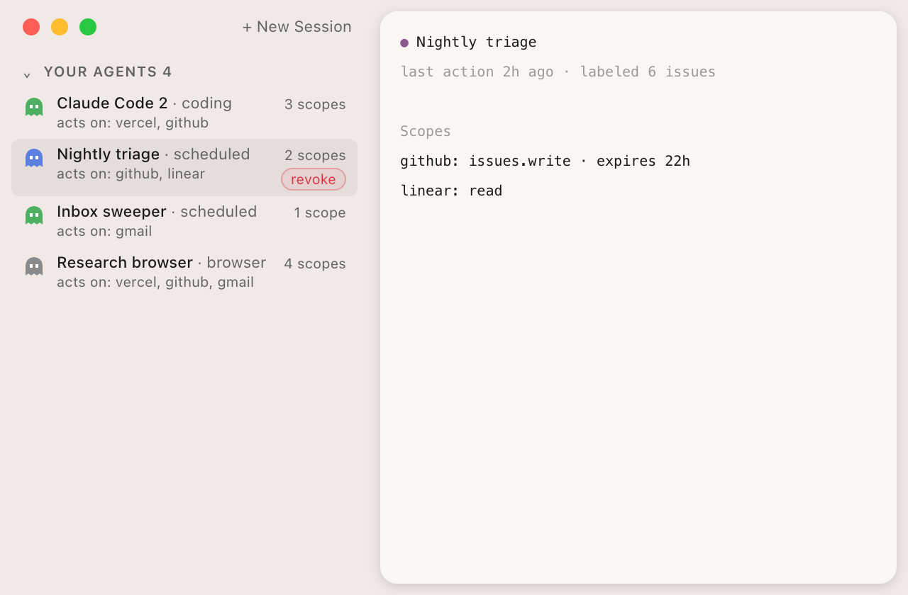
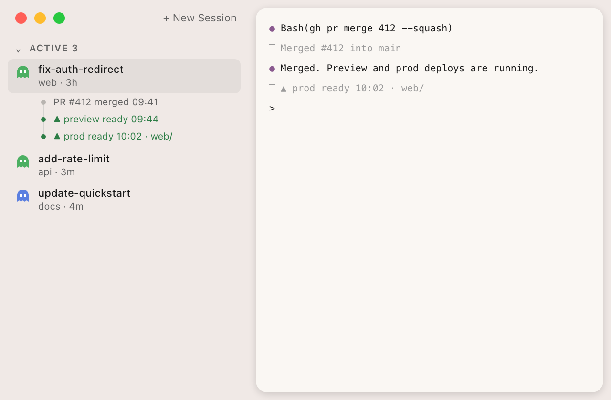
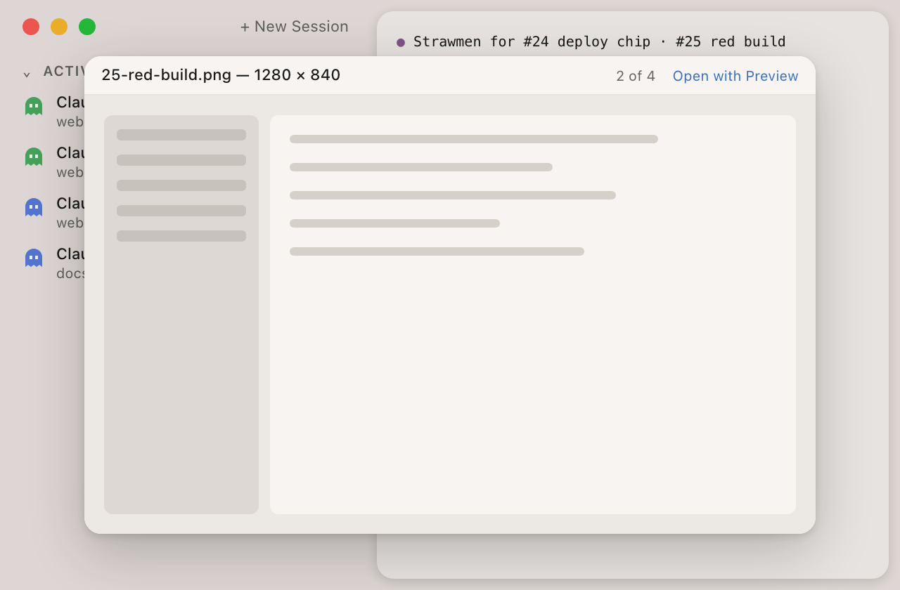
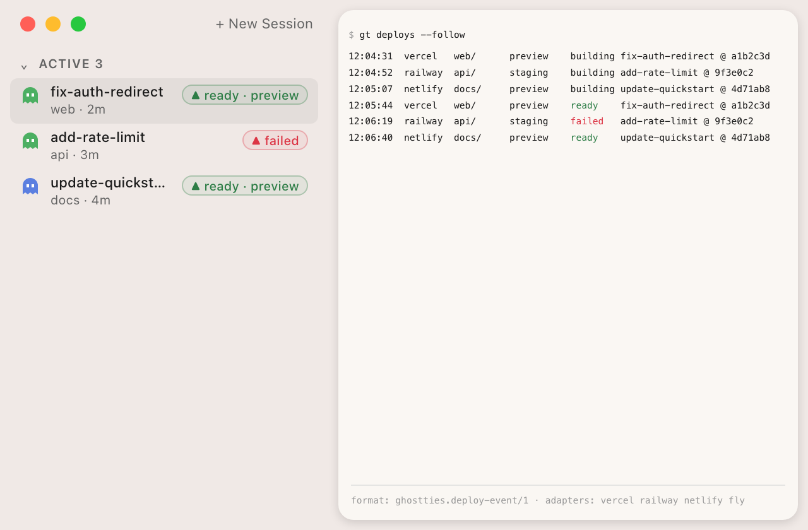
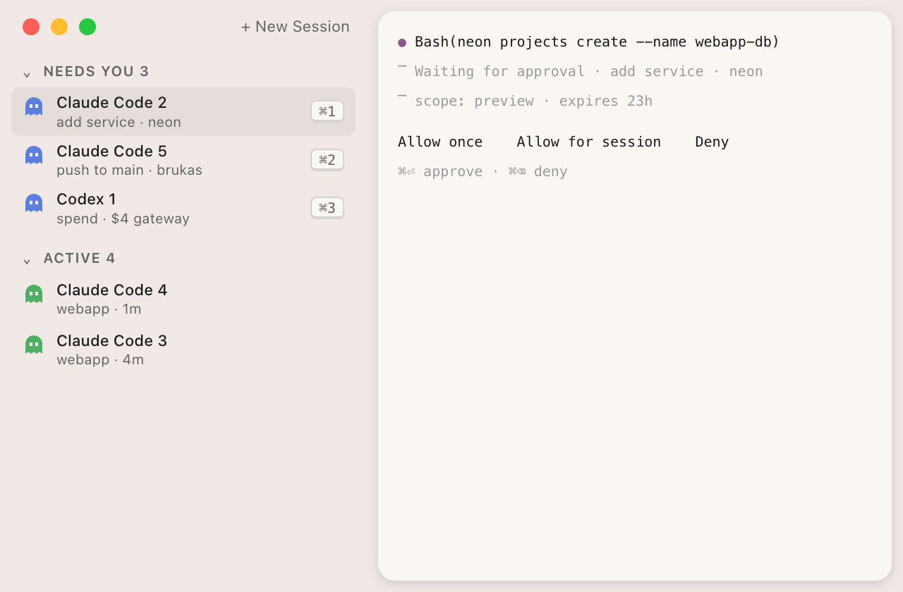
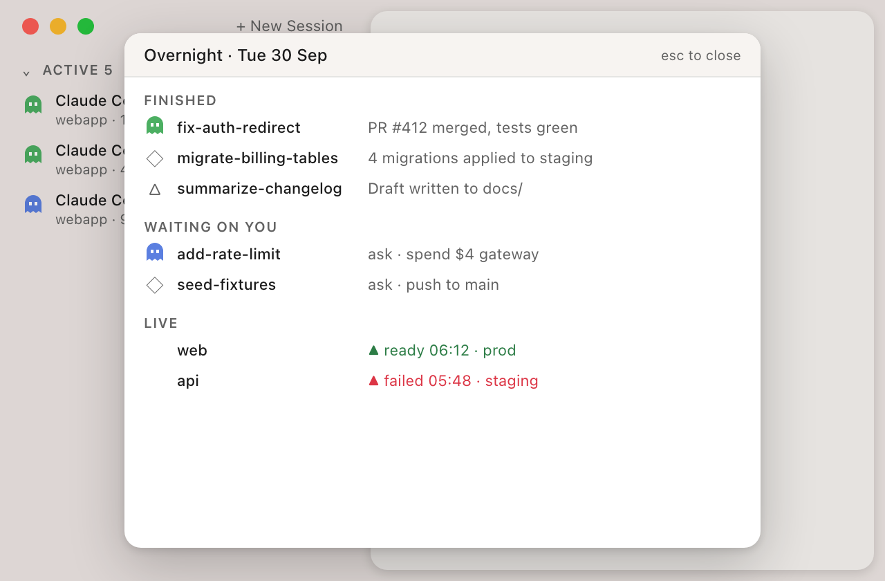
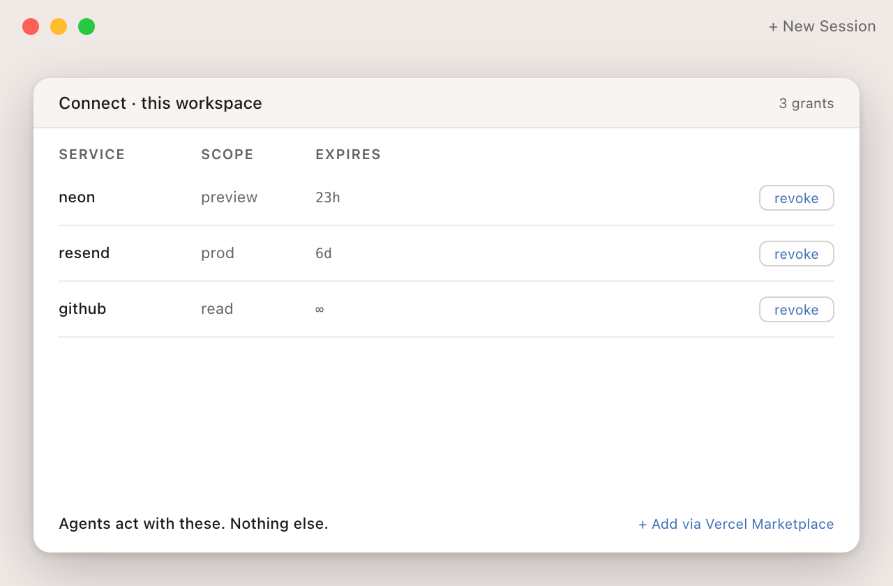

Ghostties vNext — the open ground is what your agents shipped
Project: Ghostties2026-09-30Draft 2 · reviewed
Thesis
Per-session status is table stakes (cmux: 27.5k stars, same Ghostty + Swift stack). The open ground is prod, past the merge: this production deploy came from this merge commit, from this PR, from this agent session. Commit messages already carry a Claude-Session: trailer and Vercel records the commit on every deploy, so attribution is a metadata read, not a heuristic. Honest scope: deploy state is a weekly glance plus a rare alarm. The daily surface is the morning glance (#31), with deploys as one line in it. Build the prod trail first, on a data format that is open and multi-provider, with Vercel as the first provider.
Consent card in the session row for a database or key: scope, cost, expiry, one-key approve, one-click revoke.
Vercel approvals live in Slack and the dashboard, not where the agent runs
Anthropic (permission prompt)
Marketplace + Connect
Order and clock: product order is #24 → #28 → #29. #29 sits on a separate application track: a portfolio piece to exist before applying. Ship SF (Oct 15) and Next.js Conf (Oct 22) are timing, not deadlines.
This week
A script, no app code (a gt-shaped command is fine). Take ghostties.org's current production deploy, read its githubCommitSha and commit message, resolve the merge commit to its PR, and print the Claude-Session: trailer. If it names the session, the join works. Capture one before/after screenshot of the row chip afterwards; it becomes the demo and the first application artifact.




Decisions for Sean
Which bet first? Recommend the prod trail (#24) spike: the deploy-to-session trace on ghostties.org. It is small, and it is the input to #28.
#29 before or after applying? Recommend before, on its own track, aimed at Ship SF (Oct 15) as timing. It is the only bet the Marketplace posting names verbatim ("human approval and autonomous action"). Don't let it delay the #24 spike.
Does the application drive the roadmap, or ride on it? Recommend it rides. Every bet is worth building without it; #29 is the one deliberate exception, and it stays on the application track.
Verify design leadership before tailoring? Recommend yes: check who you'd report to before writing the cover note. Tailor to the posting text, which doesn't depend on who leads design. Don't block building on it.
Open spec or Ghostties-internal first? Recommend internal first, shaped to be opened. Version the schema in the repo; publish once a second adapter (Railway) works. A spec with one implementation is a guess.
Which role? Recommend Marketplace. The role research ranks Design Engineer second and Growth third, while the brief says Growth second. Growth only makes sense if #26 produces real numbers first.
Intersection map
Rows are Ghostties strengths. Columns are Vercel surfaces. gap means nobody found doing it. bridge means Vercel has the piece but surfaces it somewhere else. crowded means it's already owned. A dash means no real tie.
Deployments
Connect / Marketplace
Agent / approvals
AI Gateway
v0 API
BotID
Native Mac surface
gap #24
bridge #29
bridge #30
crowded (Logs page)
—
—
Hooks-grade status
bridge #24 #25
bridge #29
bridge #30
bridge #32
—
—
Multi-provider
gap #28 #41
crowded (Vercel's catalog)
gap #30
crowded (is multi-model)
bridge #38
—
Ghost identity
—
bridge #35
—
—
—
gap #36
Morning glance
gap #31
—
bridge #31
bridge #32
crowded (v0's own UI)
—
The Deployments column is the most open, and the Approvals column has the strongest bridges to Vercel. The multi-provider row is where the "open, Vercel as the star" framing actually lives.
Honest findings
cmux is the incumbent, not a peer. It's a Ghostty-based native Swift sidebar with PR status, ports and attention rings, has 27.5k stars, and has an iOS app in TestFlight (repo).
Every platform owner shipped a cockpit in 2026. Claude's claude agents, the Codex app, Cursor 3, the Copilot app, Devin Desktop, and iTerm2 3.7's built-in Claude status (agent view, iTerm2).
Per-session status and PR checks are table stakes. Claude's agent view colors PR labels by check state, and Superset rows show checks (docs, Superset).
Deploy state is pull-only for local surfaces. Vercel's MCP and CLI only answer when asked, and every menu bar app polls. Push exists as webhooks, but they need a public receiver (MCP). Agents trigger more than 50% of Vercel deploys, per Vercel's own numbers (source).
No cross-provider event model found. Vercel sends webhooks, Netlify signs its webhooks, Cloudflare sends to a queue, Render limits webhooks to Pro, and Fly has none (Cloudflare, Fly).
Nobody found carries the session past the pull request. Inferred from absence, not proven; Conductor is the closest and stops at merge.
ghostties.org has no analytics. That is the #1 must-have gap for the Growth role, which asks for "measurable outcomes … chose what to measure" (posting).
Vercel design leadership: both named leaders appear to have left as of 2026-09-30. VP Design Manuel Muñoz Solera's last day is today (his own post per search snippets; new role SpaceXAI). Head of Product Design Hannah Hearth appears to be at Anthropic (medium confidence, one non-LinkedIn source). No successor is public. Verify who you'd report to before tailoring.
Vercel is hiring for the Ghostties thesis. A "PM, Software Factory" posting (today) says "human time and human attention has become the bottleneck" (posting). A matching design role is likely to follow (inferred).
Assumption checks, 2026-09-30. VERIFIED: Claude Code routes through Vercel AI Gateway. VERIFIED: every ghostties.org deploy carries the git commit, and commits carry Claude-Session:. VERIFIED: Ghostties has hook support for Claude (manual paste) and Codex (auto-registered). REFUTED: Gemini hook support does not exist in the code.
Avenues, mild → wild
Numbering continues from the 2026-09-05 set. Killed as crowded: a per-PR preview button (Conductor and Superset have it), hook status as a differentiator (cmux, iTerm2), cloud VMs (cmux, Codex, Warp Oz), and diff/kanban review surfaces (every ADE has them, and they break the non-IDE anti-goal). Four more cut after review, at the end of this section.
Mild — ships in about a week on existing code
24. Prod trail: deploy → merge commit → PR → the session that wrote itMILDCost M

Why now: VERIFIED on live data: every ghostties.org deploy carries githubCommitSha/Ref/Message, and every commit message ends with a Claude-Session: trailer. The trailer makes attribution a read, not a heuristic. Ghostties only maps that id to a sidebar row.
The open half is prod. A branch preview per session is Conductor's Deployments tab. A deploy on main comes from a merge commit that isn't the session's commit, so the join runs deploy → merge commit → PR → session. Branch chip is step 0.
Absorbs #27 and #33: a one-line-per-project prod state in the existing MenuBar/, and the expanded row trail (second image). No per-agent scoreboard.
Evidence: the menu bar apps show deploy status but not which agent shipped it, and Conductor's view is scoped to a PR (Conductor 0.29.2).
Threat: Conductor (high). It already has a Deployments tab and ships near-daily; extending past merge is small.
Vercel tie: the Software Factory narrative (a PM posting). It answers "what did my agent ship." The Marketplace tie belongs to #29 only.
Token: reuses the vercel CLI's existing login (long-lived token); Connect-scoped later (#35).
Open-not-exclusive: the chip reads from the #28 event format. Vercel is simply the first provider.
25. Red prod or runtime failure → back to the session that caused itMILDCost S (after #24)
Why now: Resume already exists on the sidebar branch. A failed chip resumes that session with the log pasted and the Vercel MCP already attached.
Verify first: Vercel posts deploy status on GitHub commits (inferred, not checked as a gh-readable check). If it counts, Claude Desktop auto-fix and Conductor already cover red previews. Scope this to prod and runtime failures only.
Evidence: Vercel Agent fixes things in its own UI (Claude, Vercel Agent).
Threat: Anthropic (high). Adding Vercel to Claude Desktop's CI auto-fix is a small step for them.
Vercel tie: the "recovery" and "handoff" language in the Software Factory posting.
Open-not-exclusive: any provider's adapter that can produce a log URL qualifies.
26. Time-to-first-agent funnelMILDCost S
Why now: extends #3. Track site visit → installer run → first launch → first agent session → first "done." Use Vercel Web Analytics on the site plus opt-in pings from the app, then run one experiment on the onboarding sheet.
Evidence: Growth's #1 must-have is "understood a funnel, chose what to measure" (posting).
Threat: none. The only risk is waiting. Numbers need weeks to accumulate, so start now.
Vercel tie: Growth, directly.
Open-not-exclusive: n/a (internal).
40. Media previewer: click an image, see it hereMILDCost S

Why now: Claude Code prints [image] name.png as an OSC 8 link and Ghostties hands it to Launch Services, so every screenshot an agent produces opens Finder or Preview. Sean, 2026-09-30: "why does finder need to open?"
Evidence: the click already lands in our code: macos/Sources/Ghostty/Ghostty.App.swiftopenURL → openUntrustedURL for OSC 8. The terminal already renders pixels via the Kitty graphics protocol (src/terminal/kitty/graphics*.zig). One branch for local image/video/PDF → QLPreviewPanel is the whole feature.
Threat: cmux or Warp could add the same in a release. iTerm2 has inline images but no Quick Look on links. Low moat, high daily-use value.
Vercel tie: none directly. It is the "calm cockpit" thesis applied to the terminal pane: don't leave the window.
Open-not-exclusive: n/a (local files).
Shape: default is the native Quick Look panel (QLPreviewPanel) — large, user-resizable, size remembered by macOS, ← → steps through every image in the transcript, Space closes. A setting media-preview = panel | popover | pane follows only if asked: popover for glance-and-dismiss, pane to dock media in the right panel (native NSImageView/AVPlayerView, not CEF — see #162). Sean 2026-09-30: "good preview but larger. Or maybe there is a setting to let someone choose."
43. Agent-installable ghostties.orgMILDCost S
Why now: agents increasingly choose and install tools themselves. Add llms.txt, a machine-readable install path, and a BotID agent/human split so the site can tell the two apart. It feeds #26 an "agents install tools" funnel.
Evidence: Vercel verifies bots via signed Web Bot Auth identities (changelog). Agents trigger more than 50% of Vercel deploys, which is the same shift on the deploy side.
Threat: none; low-moat but cheap.
Vercel tie: BotID, and the Growth funnel through #26.
Open-not-exclusive: n/a (own site).
Mid — a real feature
28. Open deploy-event spec + gt adaptersMIDCost M

Why now: extends #11. One JSON shape: provider, project, commit, state, URL, log URL, time, and session as a first-class field sourced from the commit trailer. Adapters (gt deploys --provider vercel|railway|netlify|fly) write it locally, and the app, the menu bar and other terminals read it.
Evidence: five providers use five different event mechanisms (see Peers below).
Threat: Vercel adds push to its MCP (medium). Even then, cross-provider stays open.
Vercel tie: Marketplace's partner side ("partners creating and operating integrations").
Open-not-exclusive: that's the point. Vercel is the reference adapter, and Railway is second because it sends webhooks on every state change.
Why now: the CLI can install Marketplace integrations as JSON, and Connect went GA with short-lived, task-scoped tokens (Connect). The card shows provider, scope, environment, cost tier and expiry. Approving runs vercel integration add. The grant then sits on the row as a chip that shows its expiry.
Open question: Connect covers runtime credentials, while vercel integration add is provisioning. No source shows the two compose (inferred, verify).
Evidence: the posting's bonus line is "workflows that move between human approval and autonomous action" (posting).
Threat: Anthropic's permission prompt grows service grants (medium). People also provision services only a few times a year.
Vercel tie: Marketplace + Connect. The strongest single portfolio piece, and the only one the posting names verbatim. Timing: before applying; Ship SF (Oct 15) and Next.js Conf (Oct 22) are context, not deadlines.
Open-not-exclusive: the card is generic. Vercel drives it first, and Supabase or Neon direct installs can plug in.
30. One approval queue across parallel sessionsMIDCost MLower priority

Priority: lower. Warp, cmux and iTerm2 already sort attention, so build it after #24, #28 and #29.
Why now: merges #16. NeedsYouZoneView exists. Turn it into a single queue of every pending permission, grant and prod action across Claude and Codex, answerable without switching terminals. Agent-started promote or rollback always goes through this queue.
Evidence: eve and Vercel Agent both require human approval, but only in Slack or the dashboard (eve).
Threat: Warp's unified notification center (medium) (Warp).
Vercel tie: Marketplace (the approval seam).
Open-not-exclusive: hook-based. Claude and Codex have hooks in Ghostties today; Gemini has none.
31. The morning glance, with deploysMIDCost MThe daily surface

Why now: this is the mission's north star and the daily product. One view answers "what finished overnight, what's waiting, what's live." #24 and #25 are its alarm layer: a weekly glance plus a rare interrupt, shown as one deploy line here.
Hook coverage (checked): Claude yes (manual paste of the settings snippet), Codex yes (auto-registered), Gemini none. The mockup shows Gemini; that part is REFUTED for today's code.
Evidence: each vendor's hub covers only itself, and Superset is organized around worktrees, not your day (Superset).
Vercel tie: Growth ("retention" is a daily reason to open the app).
Open-not-exclusive: multi-agent and multi-provider by design.
32. Session ledger via AI GatewayMIDCost LPortfolio piece, not product
Why now: merges #10's cost idea. Each session is a row showing model, provider, fallback used, tokens, cost and latency. A failed request expands into a plain-language diagnosis. Built in Next.js + AI SDK, with a sidebar chip.
Feasibility: VERIFIED. Vercel documents Claude Code as a first-class agent: ANTHROPIC_BASE_URL=https://ai-gateway.vercel.sh/claude-code (or npx vercel ai-gateway setup --agent claude-code). Only Claude models route this way; Anthropic doesn't support non-Claude models through a gateway.
Cost flag: once a gateway key is set, the claude.ai subscription no longer covers that usage and billing becomes per token. Setting only the base URL keeps subscription billing.
Evidence: the Gateway's Logs page already lists cost and tokens per request (changelog).
Threat: the Copilot app already shows session costs (Copilot), and Gateway Logs is the surface. Build it as a role artifact only.
Vercel tie: Design Engineer (AI Gateway). It closes the React/TS gap and earns the "built with AI Gateway" bonus.
Open-not-exclusive: Gateway-only for routing, but the ledger format can take other providers' usage data.
41. gt deploys as the distribution vehicleMIDCost S (after #28)
Why now: ship the #28 adapters as a standalone gt deploys command that runs in cmux, iTerm2 and Warp, not only Ghostties. That gives the open format users beyond this app.
Evidence: the multi-provider tools found are menu bar apps with single-digit to low-thirty stars (see Tool inventory).
Threat: a host terminal or Vercel's CLI adds the same view (low-medium).
Vercel tie: Marketplace partner side, through the shared format.
Open-not-exclusive: the whole point.
Wild — a repositioning
35. Ghostties as the agent-side client of Vercel ConnectWILDCost L(inferred, verify)

Why now: Connect's consent flow is v1 and designed from the dashboard. Ghostties becomes the place where each agent session holds its own credentials: scoped to that session, and expiring automatically when the session closes. Whether Connect tokens compose with Marketplace install is unverified.
Evidence: "Credentials that used to sit in environments long after the work finished now expire on their own" (Connect). The April breach came through a leaked OAuth token (bulletin).
Threat: Vercel builds its own local agent (low).
Vercel tie: Marketplace + Connect, the "how agent access should work next" line.
Open-not-exclusive: Vercel-first. Any short-lived credential broker could plug in later.
36. A bot console for one personWILDCost L
Why now: the sidebar lists every agent acting on your behalf: coding sessions, scheduled agents, browser agents. Each shows its scopes, live grants, last action and a revoke button. BotID lets sites verify bots; this is the other side, where the person manages them.
Evidence: Vercel verifies bots through signed Web Bot Auth identities (changelog). Nobody found offering a console for the individual (inferred).
Threat: an OS vendor or a password manager (low within 12 months).
Vercel tie: BotID team (none of the three open roles).
Open-not-exclusive: Web Bot Auth is an IETF draft, so this is open by construction.
38. v0 as a session providerWILDCost M
Why now: the v0 API is headless and GA. The composer can start a v0 build as a sidebar row alongside Claude and Codex, with the same status, deploy chip and pull-down.
Evidence: v0 is repositioned as "infrastructure for agents" (InfoQ).
Threat: Cursor and Conductor add v0 (medium).
Vercel tie: Marketplace ("v0 and partner tools" is named in the posting).
Open-not-exclusive: v0 becomes one more provider in the same sidebar row as Claude and Codex.
39. The human's seat in the software factoryWILDCost M (copy + site)
Why now: extends #23. Reposition from "multi-agent terminal" to "where you watch, grant and recover everything your agents ship." This requires #24, #29 and #30 to exist first. Copy goes through writing:draft.
Evidence: Vercel's newest posting says "Human time and human attention has become the bottleneck" (Software Factory).
Threat: Vercel's own Software Factory product (unknown shape).
Vercel tie: Software Factory. Name it in any cover note.
Open-not-exclusive: the positioning stays provider-neutral.
42. Vercel Sandbox sessions as sidebar rowsWILDCost M
Why now: Vercel Sandbox is a public GA API, so this is the verifiable version of the dropped #21. A cloud agent run shows up as a sidebar row with the same status and deploy trail as a local one.
Evidence: Sandbox is a public GA API (per the critique; haven't re-checked its endpoints).
Threat: cmux, Codex and Warp Oz already ship cloud runs (medium). This keeps the local-first sidebar as the single view.
Vercel tie: Software Factory, and Design Engineer if built in Next.js (inferred).
Open-not-exclusive: Sandbox is one more provider behind the row, like #38.
Cut after review
Cards collapsed to one line so numbering and anchors survive.
27. Prod in the menu bar. Merged into #24: one prod line per project in MenuBar/.
33. What each agent shipped. Killed: subsumed by the re-aimed #24 (its image now lives there), and "Frank shipped 4 deploys" is a scoreboard while mission.md says no gamification.
34. Push, not poll: a relay on Vercel. Killed: its own citation (Hookdeck) is a webhook-to-localhost relay, and a hosted relay breaks "no accounts."
37. Phone glance with prod state. Killed: Superset, cmux and iTerm2 all ship iOS apps. Prod state is one line in #31.
What the prior 23 look like now
Prior #
Now
Reason
1
Keep, as a prerequisite
Still needed, but hook status is table stakes now (iTerm2 3.7, cmux), not the headline.
2
Keep, unchanged
Close the loop on beta.25 (release pipeline housekeeping). Outside the vNext bets, and nothing here replaces it.
3
Merge into #26
Analytics only matter if they feed a funnel with a hypothesis.
5
Keep, pairs with #26
Ship v0.1.0 stable plus one launch post. It gives "shipped outcomes, impact after launch" for the application, and gives #26 something to measure.
7
Merge into #24 (via #27)
A menu bar with only session status matches cmux. Prod state is what differentiates it.
8
Keep, folds into #24 and #31
Ghost glyph owns status. Still blocked on the session join (GHOSTTIES_SESSION_ID → pid), which the prod trail needs anyway.
10
Merge into #32
Claude agent view has one-line summaries, and Copilot shows cost.
11
Keep, the bet
It now carries the #28 event format as its spec.
12
Merge into #31
Superset, cmux and iTerm2 all ship iOS status apps; #37 was cut.
13
Keep sitting; revisit after Ghostty 1.4
Ghostty 1.4 scripting plus the libghostty-app prediction makes a companion app more viable (Hashimoto).
16
Merge into #30
One line per row is now standard. The queue is the new part.
21
Drop; #42 is the verifiable variant
Every vendor unifies only its own cloud. Vercel Sandbox is a public API.
22
Drop
Team-shaped (anti-goal), and Conductor loadouts already share configs.
23
Merge into #39
Now has a direction to say.
Backing detail
Adversarial review (2026-09-30)
Verdict: the thesis holds only past the merge. The "this week" spike builds the crowded pre-merge half. Re-aim the spike, split portfolio from product, cut four avenues.
HIGH, spike tests the wrong half. Bet 1 and "This week" now target the prod deploy → merge commit → PR → session join; the branch chip is step 0 in #24.
HIGH, #25 may already exist. #25 now carries a "Verify first" bullet and is scoped to prod and runtime failures. The check itself is not run yet.
HIGH, feature, not product. Thesis names #31 as the daily surface and #24/#25 as its weekly-glance alarm layer; #31 card says so.
HIGH, Marketplace tie on #24 overstated. #24 and the bet table now tie to the Software Factory PM narrative; Marketplace stays on #29.
MED, #29 first still loses. Order stays #24 → #28 → #29, with #29 on a labelled application track and Oct 15 / Oct 22 as timing.
MED, Connect and Marketplace install conflated. #29 and #35 are marked "inferred, verify"; #29 has an open-question bullet.
MED, crowded avenues survived. #27 merged into #24; #33, #34, #37 collapsed under "Cut after review"; #30 marked lower priority; #32 marked "portfolio piece, not product."
MED, "stores no token" misleads. Replaced with "reuses the vercel CLI's existing login (long-lived token)" in #24 and the tool inventory note.
LOW, flat claims marked inferred. "Nobody carries the session past the PR" is now "nobody found," flagged inferred; "pull-only everywhere" is now "pull-only for local surfaces."
LOW, fold misses order and clock. Added an "Order and clock" line under the bet table, moved Decisions above the fold, and restored #2, #5 and #8 to the prior table.
Verification notes (2026-09-30)
AI Gateway: VERIFIED. Claude Code is a documented first-class agent (ANTHROPIC_BASE_URL=https://ai-gateway.vercel.sh/claude-code, ANTHROPIC_AUTH_TOKEN = gateway key). A credential variable replaces subscription billing with per-token billing. Non-Claude models through a gateway are unsupported by Anthropic (Vercel, Claude Code).
Hooks in Ghostties (main @ ba6a5dbc7). Claude: YES, manual registration (HookInstaller seeds the script; Sean pastes the settings snippet; state goes to ~/.ghostties/state/). Codex: YES, auto-registered by CodexHookRegistrar on first launch, approved once in Codex's trust UI (this refutes the earlier "template-only" note). Gemini: NO, zero matches in code. Nothing in the Swift code reads ~/.claude/sessions/<pid>.json.
Design leadership. VP Design Manuel Muñoz Solera: last day 2026-09-30, moving to SpaceXAI (medium-high; his post via search snippets, x.com not fetchable). Head of Product Design Hannah Hearth: appears to be at Anthropic (medium; one non-LinkedIn roster, her own site still says Vercel). Current lead: unverified; no successor public, Evil Rabbit the likeliest senior design voice (inferred, low).
Vercel records the commit per deploy: VERIFIED on live data. The 3 most recent ghostties-web deploys each carry githubCommitSha, githubCommitRef, githubCommitMessage, and every commit message ends with a Claude-Session: trailer. Deploy → session needs no local bookkeeping.
Every third-party tool asks for a long-lived personal token, which is a trust cost after the April breach. #24 reuses the vercel CLI's existing login instead, which is also a long-lived token; Connect-scoped access comes later (#35).
Deployments tab plus PR timeline. Extending past merge is small.
Superset / Vercel plugin
Medium
Preview button plus sidebar-badge issue / plugin already has hooks
Failure → agent handoff
Anthropic
High
CI auto-fix exists; adding the Vercel connector is small
Cross-provider morning glance
Superset
Medium-high
Multi-provider plus iPhone
Native multi-provider hook status
cmux
High
Same stack, hooks CLI exists
Personal agent roster
Anthropic
Medium
Owns ~/.claude/agents
Calm, non-IDE cockpit
cmux
Medium
Occupies it now, but drifting toward cloud
Cross-vendor local + cloud
GitHub Agent HQ
Medium
Multi-vendor charter, PR-centric
Vercel roles — fit at a glance
Marketplace ($172–258K, posting): "production engineering experience is not required"; bonus for approval ↔ autonomy work. Gap: no multi-sided or billing work shown.
Growth ($172–258K, posting): the #1 must-have is a measured funnel. Gap: no analytics.
Design Engineer, AI Gateway ($208–312K, posting): requires React/TS in a large codebase. Gap: shipped work is Swift.
Still unverified: Conductor's and Claude Desktop's frameworks, whether Vercel's GitHub commit status counts as a gh-readable check (#25), whether Connect tokens compose with Marketplace install (#29, #35), and Vercel's current design lead.